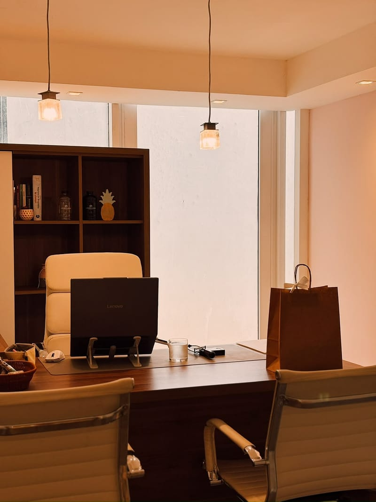
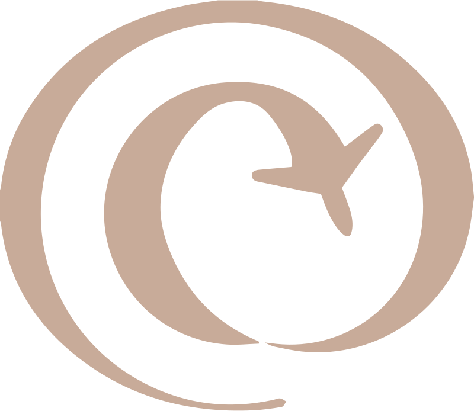
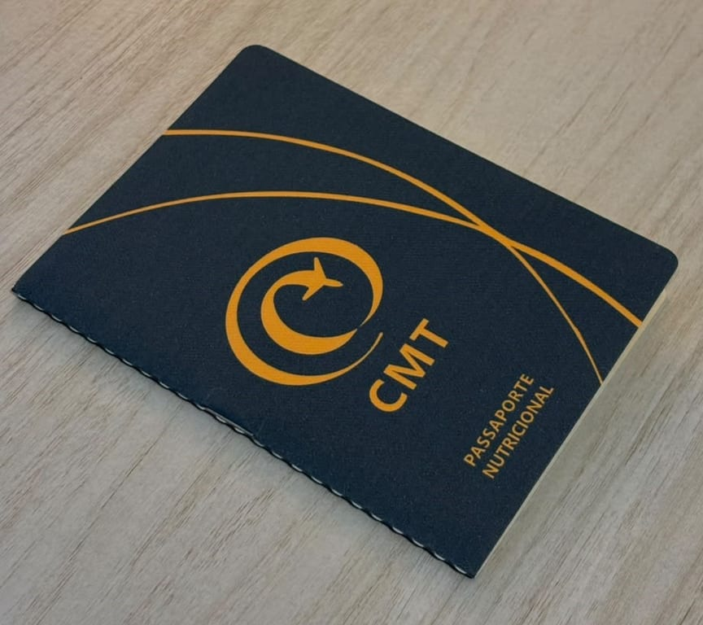
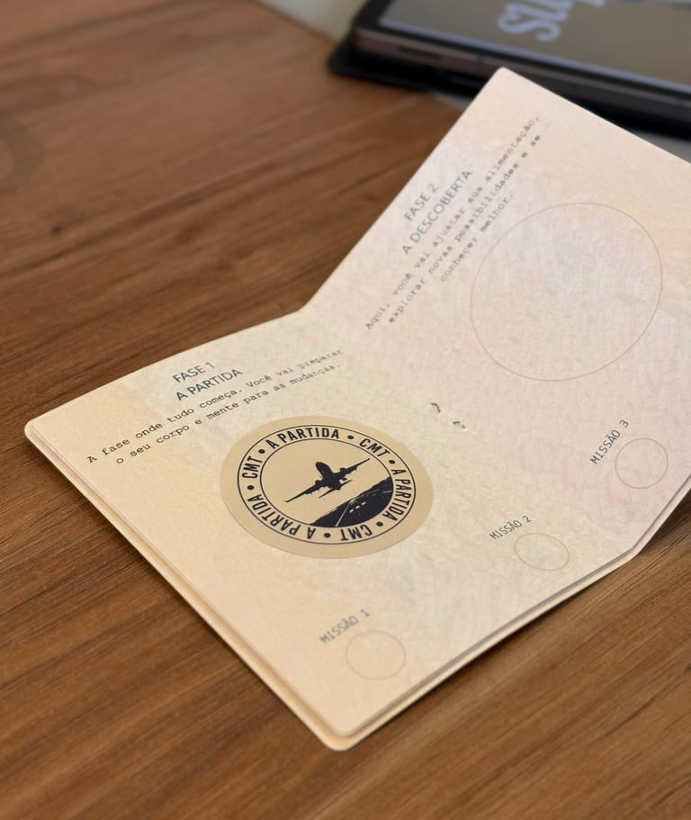
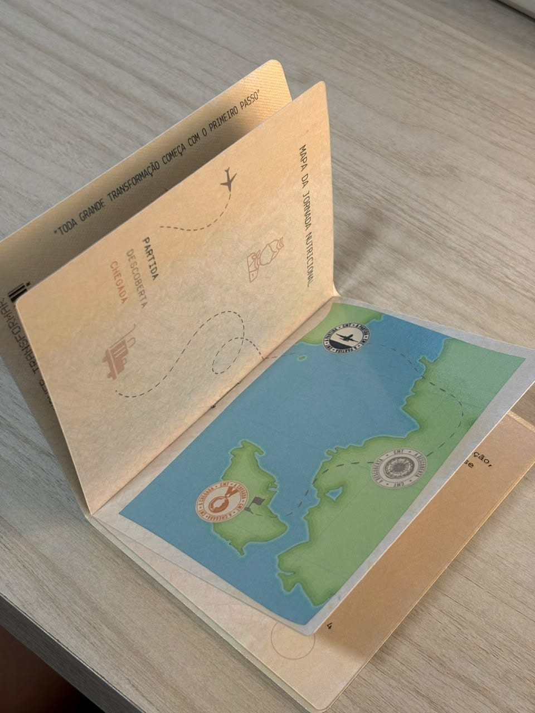
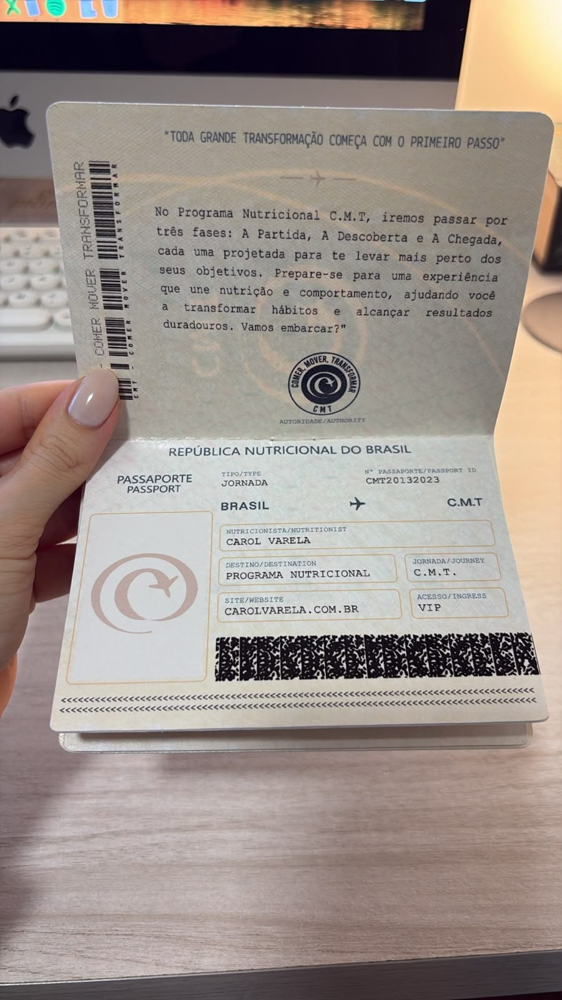

Acompanhamento Nutricional
A sua mudança começa aqui.
Se você já tentou mil vezes, ou nunca soube por onde começar, esse é o passo em direção à constância.
Nada de fórmulas prontas ou planos que não conversam com a sua rotina.
Aqui, o acompanhamento leva em conta os seus horários, suas preferências, seus desafios. Com escuta de verdade, estratégia e ajustes contínuos, você finalmente encontra um caminho possível de seguir — e de sustentar.


Programa Nutricional
Comer, Mover, Transformar (CMT)
O CMT é um programa intensivo de 4 encontros, criado pra quem quer emagrecer de forma consistente, romper o ciclo de tentativas e viver uma transformação.
Aqui, o foco é no comportamento: o que te trava, o que te impulsiona e o que realmente te sustenta no processo.
Essa é uma viagem com destino ao seu objetivo, e cada fase te aproxima do corpo e da relação com a comida que você quer (e pode) construir.
- 01A Partida
- 02A Descoberta
- 03A Chegada
-

-

-

-

Avaliações
Eles decidiram fazer diferente
Depoimentos de quem escolheu se colocar em primeiro lugar.
Você também pode. Quando o plano se encaixa, o cuidado se sustenta.
Quem vai ser a sua nutricionista
Carol Varela
Sou Carol Varela, nutricionista esportiva e estética com abordagem comportamental, graduada pela Universidade Federal do Rio de Janeiro (UFRJ) e certificada pela International Society of Sports Nutrition (ISSN). Atuo com foco em emagrecimento, recomposição corporal e construção de uma rotina alimentar possível de manter, mesmo com dias corridos, imprevistos ou recaídas.
Minha história com a nutrição começou ainda na adolescência, quando percebi que alimentação não era só sobre “comer certo”, mas sobre organização, autoconhecimento e escolhas consistentes. Desde então, construí uma trajetória baseada em escuta, estratégia e transformação, com planos que funcionam na prática e se adaptam à realidade de cada paciente.
Hoje, atendo pessoas que já tentaram diferentes métodos, mas ainda não haviam encontrado um acompanhamento que respeitasse suas fases, acelerasse o que é possível e sustentasse o que é necessário.
Sou criadora do programa Comer, Mover, Transformar (CMT), uma metodologia exclusiva que combina acompanhamento técnico, comportamento e estratégias práticas de evolução. Além do CMT, também ofereço consultas e planos de acompanhamento, para que cada pessoa encontre um formato que faça sentido para o seu momento e objetivos.
- Formação
- UFRJ
- Certificação
- ISSN
- Foco
- Emagrecimento e recomposição corporal
Dúvidas
Perguntas frequentes
O atendimento é presencial ou on-line?
As duas modalidades estão disponíveis. Os atendimentos presenciais acontecem na Barra Olímpica, no Rio de Janeiro, e o acompanhamento on-line permite que você seja atendido de onde estiver.
Como funciona a avaliação física?
A avaliação física é feita tanto na consulta presencial, quanto on-line. Na modalidade presencial, fazemos bioimpedância, dobras cutâneas, medidas e fotos. Na modalidade on-line, fazemos um escaneamento corporal pelo Shaped, além de medidas e fotos.
Vou ter acompanhamento entre as consultas?
Nos planos de acompanhamento, os check-ins permitem observar sua evolução, identificar dificuldades e orientar ajustes quando necessário. As condições dependem da modalidade escolhida.
Você atende por plano de saúde?
Para oferecer uma consulta completa, individualizada e com o tempo e a atenção que cada paciente merece, meus atendimentos são particulares, sem atendimento direto por convênios. É possível solicitar recibo e documentação pertinente para avaliar o reembolso com a sua operadora, conforme as regras do seu plano.
Como posso saber qual modalidade é mais adequada para mim?
Basta entrar em contato pelo WhatsApp. Conversaremos sobre seu objetivo e apresentarei as opções de atendimento, funcionamento e investimento.